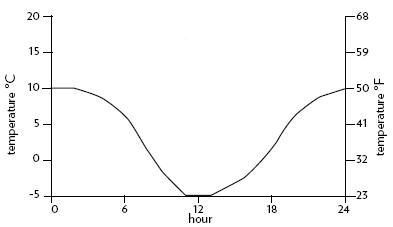
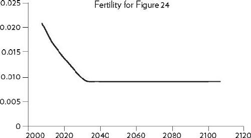
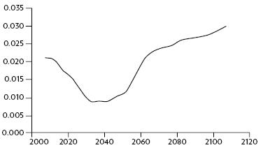
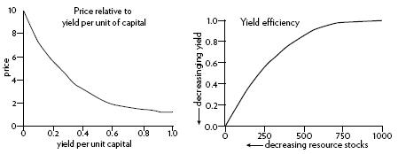
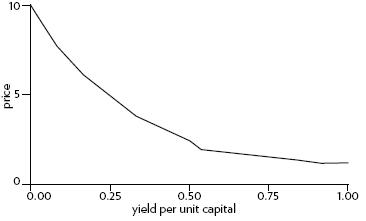
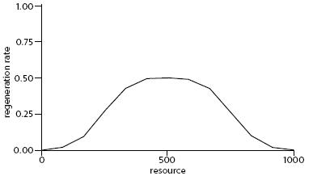
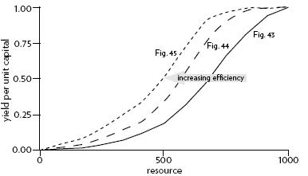

Appendix
附录
_____________
是的，是的，是的
System Definitions: A Glossary
系统定义: 术语表
Archetypes: Common system structures that produce characteristic patterns of behavior.
原型: 产生行为特征模式的常见系统结构。
Balancing feedback loop: A stabilizing, goal-seeking, regulating feedback loop, also know as a “negative feedback loop” because it opposes, or reverses, whatever direction of change is imposed on the system.
平衡反馈回路: 一个稳定的，寻求目标的，调节反馈回路，也称为“负反馈回路”，因为它反对，或逆转，任何方向的变化是强加于系统。
Bounded rationality: The logic that leads to decisions or actions that make sense within one part of a system but are not reasonable within a broader context or when seen as a part of the wider system.
有限理性: 导致决策或行动的逻辑，这些决策或行动在一个系统的某一部分内有意义，但在更广泛的背景下不合理，或被视为更广泛的系统的一部分。
Dynamic equilibrium: The condition in which the state of a stock (its level or its size) is steady and unchanging, despite inflows and outflows. This is possible only when all inflows equal all outflows.
动态平衡: 股票的状态(其水平或规模)尽管有流入和流出，仍保持稳定和不变的状态。只有当所有的资金流入等于所有的资金流出时，这才是可能的。
Dynamics: The behavior over time of a system or any of its components.
动力学: 一个系统或其组成部分随着时间的推移而产生的行为。
Feedback loop: The mechanism (rule or information flow or signal) that allows a change in a stock to affect a flow into or out of that same stock. A closed chain of causal connections from a stock, through a set of decisions and actions dependent on the level of the stock, and back again through a flow to change the stock.
反馈回路: 允许股票变化影响流入或流出同一股票的机制(规则或信息流或信号)。来自股票的一系列因果关系，通过一系列依赖于股票水平的决策和行动，然后再通过流动来改变股票。
Flow: Material or information that enters or leaves a stock over a period of time.
流程: 在一段时间内进入或离开股票的材料或信息。
Hierarchy: Systems organized in such a way as to create a larger system. Subsystems within systems.
层次结构: 以创建更大系统的方式组织起来的系统。
Limiting factor: A necessary system input that is the one limiting the activity of the system at a particular moment.
限制因素: 在特定时刻限制系统活动的必要系统输入。
Linear relationship: A relationship between two elements in a system that has constant proportion between cause and effect and so can be drawn with a straight line on a graph. The effect is additive.
线性关系: 系统中两个元素之间的关系，因果之间的比例不变，因此可以用直线在图上画出来。效应是相加的。
Nonlinear relationship: A relationship between two elements in a system where the cause does not produce a proportional (straight-line) effect.
非线性关系: 系统中两个元素之间的关系，其原因不产生比例(直线)效应。
Reinforcing feedback loop: An amplifying or enhancing feedback loop, also known as a “positive feedback loop” because it reinforces the direction of change. These are vicious cycles and virtuous circles.
强化反馈回路: 一个放大或增强的反馈回路，也称为“正反馈回路”，因为它加强了变化的方向。这是恶性循环和良性循环。
Resilience: The ability of a system to recover from perturbation; the ability to restore or repair or bounce back after a change due to an outside force.
弹性: 一个系统从干扰中恢复的能力; 由于外部力量的影响而发生变化后恢复、修复或反弹的能力。
Self-organization: The ability of a system to structure itself, to create new structure, to learn, or diversify.
自我组织: 系统自我组织、创造新结构、学习或多样化的能力。
Shifting dominance: The change over time of the relative strengths of competing feedback loops.
转移支配地位: 相互竞争的反馈回路的相对优势随着时间的推移而改变。
Stock: An accumulation of material or information that has built up in a system over time.
股票: 随着时间的推移在一个系统中积累起来的材料或信息的积累。
Suboptimization: The behavior resulting from a subsystem’s goals dominating at the expense of the total system’s goals.
次优化: 由子系统的目标支配整个系统的目标而产生的行为。
System: A set of elements or parts that is coherently organized and interconnected in a pattern or structure that produces a characteristic set of behaviors, often classified as its “function” or “purpose.”
系统: 在一个模式或结构中连贯地组织和相互联系的一组元素或部分，产生一系列特征性的行为，通常被归类为其“功能”或“目的”
Summary of Systems Principles
系统原则摘要
Systems
系统
• A system is more than the sum of its parts.
• Many of the interconnections in systems operate through the flow of information.
• The least obvious part of the system, its function or purpose, is often the most crucial determinant of the system’s behavior.
• System structure is the source of system behavior. System behavior reveals itself as a series of events over time.
Stocks, Flows, and Dynamic Equilibrium
股票，流动，和动态平衡
• A stock is the memory of the history of changing flows within the system.
• If the sum of inflows exceeds the sum of outflows, the stock level will rise.
• If the sum of outflows exceeds the sum of inflows, the stock level will fall.
• If the sum of outflows equals the sum of inflows, the stock level will not change — it will be held in dynamic equilibrium.
• A stock can be increased by decreasing its outflow rate as well as by increasing its inflow rate.
• Stocks act as delays or buffers or shock absorbers in systems.
• Stocks allow inflows and outflows to be de-coupled and independent.
Feedback Loops
反馈回路
• A feedback loop is a closed chain of causal connections from a stock, through a set of decisions or rules or physical laws or actions that are dependent on the level of the stock, and back again through a flow to change the stock.
• Balancing feedback loops are equilibrating or goal-seeking structures in systems and are both sources of stability and sources of resistance to change.
• Reinforcing feedback loops are self-enhancing, leading to exponential growth or to runaway collapses over time.
• The information delivered by a feedback loop—even nonphysical feedback—can affect only future behavior; it can’t deliver a signal fast enough to correct behavior that drove the current feedback.
• A stock-maintaining balancing feedback loop must have its goal set appropriately to compensate for draining or inflowing processes that affect that stock. Otherwise, the feedback process will fall short of or exceed the target for the stock.
• Systems with similar feedback structures produce similar dynamic behaviors.
Shifting Dominance, Delays, and Oscillations
转换优势、延迟和振荡
• Complex behaviors of systems often arise as the relative strengths of feedback loops shift, causing first one loop and then another to dominate behavior.
• A delay in a balancing feedback loop makes a system likely to oscillate.
• Changing the length of a delay may make a large change in the behavior of a system.
Scenarios and Testing Models
场景和测试模型
• System dynamics models explore possible futures and ask “what if” questions.
• Model utility depends not on whether its driving scenarios are realistic (since no one can know that for sure), but on whether it responds with a realistic pattern of behavior.
Constraints on Systems
系统的约束
• In physical, exponentially growing systems, there must be at least one reinforcing loop driving the growth and at least one balancing loop constraining the growth, because no system can grow forever in a finite environment.
• Nonrenewable resources are stock-limited.
• Renewable resources are flow-limited.
Resilience, Self-Organization, and Hierarchy
适应力、自我组织和等级制度
• There are always limits to resilience.
• Systems need to be managed not only for productivity or stability, they also need to be managed for resilience.
• Systems often have the property of self-organization—the ability to structure themselves, to create new structure, to learn, diversify, and complexify.
• Hierarchical systems evolve from the bottom up. The purpose of the upper layers of the hierarchy is to serve the purposes of the lower layers.
Source of System Surprises
系统意外的来源
• Many relationships in systems are nonlinear.
• There are no separate systems. The world is a continuum. Where to draw a boundary around a system depends on the purpose of the discussion.
• At any given time, the input that is most important to a system is the one that is most limiting.
• Any physical entity with multiple inputs and outputs is surrounded by layers of limits.
• There always will be limits to growth.
• A quantity growing exponentially toward a limit reaches that limit in a surprisingly short time.
• When there are long delays in feedback loops, some sort of foresight is essential.
• The bounded rationality of each actor in a system may not lead to decisions that further the welfare of the system as a whole.
Mindsets and Models
思维模式和模型
• Everything we think we know about the world is a model.
• Our models do have a strong congruence with the world.
• Our models fall far short of representing the real world fully.
Springing the System Traps
启动系统陷阱
Policy Resistance
政策阻力
Trap: When various actors try to pull a system state toward various goals, the result can be policy resistance. Any new policy, especially if it’s effective, just pulls the system state farther from the goals of other actors and produces additional resistance, with a result that no one likes, but that everyone expends considerable effort in maintaining.
陷阱: 当不同的参与者试图将一个系统状态拉向不同的目标时，结果可能是政策阻力。任何新政策，特别是如果它是有效的，只会使系统状态远离其他参与者的目标，并产生额外的阻力，其结果是没有人喜欢，但每个人都花费相当大的努力来维护。
The Way Out: Let go. Bring in all the actors and use the energy formerly expended on resistance to seek out mutually satisfactory ways for all goals to be realized—or redefinitions of larger and more important goals that everyone can pull toward together.
出路: 放手。让所有的参与者参与进来，并利用之前耗费在抵抗上的精力，为实现所有目标寻找双方都满意的方式——或者重新定义更大、更重要的目标，让每个人都能齐心协力实现。
The Tragedy of the Commons
公地悲剧
Trap: When there is a commonly shared resource, every user benefits directly from its use, but shares the costs of its abuse with everyone else. Therefore, there is very weak feedback from the condition of the resource to the decisions of the resource users. The consequence is overuse of the resource, eroding it until it becomes unavailable to anyone.
陷阱: 当有一个共享的资源时，每个用户都直接从其使用中获益，但与其他人分担滥用资源的成本。因此，从资源的状况到资源使用者的决策反馈是非常微弱的。结果就是过度使用资源，侵蚀资源，直到它变得不可用于任何人。
The Way Out: Educate and exhort the users, so they understand the consequences of abusing the resource. And also restore or strengthen the missing feedback link, either by privatizing the resource so each user feels the direct consequences of its abuse or (since many resources cannot be privatized) by regulating the access of all users to the resource.
出路: 教育和鼓励用户，让他们了解滥用资源的后果。并恢复或加强缺失的反馈链接，或者将资源私有化，使每个用户都能感受到滥用资源的直接后果，或者(因为许多资源不能私有化)规范所有用户对资源的访问。
Drift to Low Performance
漂移到低性能
Trap: Allowing performance standards to be influenced by past performance, especially if there is a negative bias in perceiving past performance, sets up a reinforcing feedback loop of eroding goals that sets a system drifting toward low performance.
陷阱: 允许绩效标准受到过去绩效的影响，特别是在对过去绩效的认识存在负面偏见的情况下，建立一个强化的反馈循环，侵蚀目标，使系统朝着低绩效的方向发展。
The Way Out: Keep performance standards absolute. Even better, let standards be enhanced by the best actual performances instead of being discouraged by the worst. Set up a drift toward high performance!
出路: 保持绝对的绩效标准。更好的是，让最好的实际表现来提高标准，而不是被最差的表现所打击。建立一个向高绩效发展的趋势！
Escalation
升级
Trap: When the state of one stock is determined by trying to surpass the state of another stock—and vice versa—then there is a reinforcing feedback loop carrying the system into an arms race, a wealth race, a smear campaign, escalating loudness, escalating violence. The escalation is exponential and can lead to extremes surprisingly quickly. If nothing is done, the spiral will be stopped by someone’s collapse—because exponential growth cannot go on forever.
陷阱: 当一只股票的状态是由试图超越另一只股票的状态决定的——反之亦然——那么就会出现一个强化的反馈循环，将整个系统带入一场军备竞赛、一场财富竞赛、一场抹黑运动、不断升级的喧嚣、不断升级的暴力。这种升级是指数级的，而且可以以惊人的速度导致极端。如果什么都不做，螺旋式上升将被某人的崩溃所阻止——因为指数增长不可能永远持续下去。
The Way Out: The best way out of this trap is to avoid getting in it. If caught in an escalating system, one can refuse to compete (unilaterally disarm), thereby interrupting the reinforcing loop. Or one can negotiate a new system with balancing loops to control the escalation.
出路: 摆脱这个陷阱的最好办法就是避免陷入其中。如果陷入一个不断升级的系统，人们可以拒绝竞争(单方面解除武装) ，从而中断强化循环。或者一个人可以协商一个新的系统，用平衡回路来控制升级。
Success to the Successful
成功者的成功
Trap: If the winners of a competition are systematically rewarded with the means to win again, a reinforcing feedback loop is created by which, if it is allowed to proceed uninhibited, the winners eventually take all, while the losers are eliminated.
陷阱: 如果一场比赛的获胜者被系统地奖励了再次获胜的手段，就会形成一个强化的反馈循环，如果允许这种循环不受限制地进行，获胜者最终将获得所有，而失败者将被淘汰。
The Way Out: Diversification, which allows those who are losing the competition to get out of that game and start another one; strict limitation on the fraction of the pie any one winner may win (antitrust laws); policies that level the playing field, removing some of the advantage of the strongest players or increasing the advantage of the weakest; policies that devise rewards for success that do not bias the next round of competition.
出路: 多样化，允许那些在竞争中失利的人退出这个游戏，开始另一个游戏; 严格限制任何一个赢家可能赢得的蛋糕的比例(反垄断法) ; 公平竞争环境的政策，消除最强者的一些优势或增加最弱者的优势; 为成功设计奖励的政策，不偏向下一轮竞争。
Shifting the Burden to the Intervenor
把责任转移给干预者
Trap: Shifting the burden, dependence, and addiction arise when a solution to a systemic problem reduces (or disguises) the symptoms, but does nothing to solve the underlying problem. Whether it is a substance that dulls one’s perception or a policy that hides the underlying trouble, the drug of choice interferes with the actions that could solve the real problem.
陷阱: 当一个系统性问题的解决方案减少(或掩饰)症状，但对解决根本问题没有任何作用时，转移负担、依赖和成瘾就出现了。无论是一种使人感觉迟钝的物质，还是一种隐藏潜在问题的政策，选择的药物都会干扰能够解决真正问题的行动。
If the intervention designed to correct the problem causes the self-maintaining capacity of the original system to atrophy or erode, then a destructive reinforcing feedback loop is set in motion. The system deteriorates; more and more of the solution is then required. The system will become more and more dependent on the intervention and less and less able to maintain its own desired state.
如果旨在纠正问题的干预措施导致原始系统的自我维持能力萎缩或削弱，那么一个破坏性的强化反馈回路就会启动。系统恶化，需要越来越多的解决方案。系统将变得越来越依赖于干预，越来越不能维持自己想要的状态。
The Way Out: Again, the best way out of this trap is to avoid getting in. Beware of symptom-relieving or signal-denying policies or practices that don’t really address the problem. Take the focus off short-term relief and put it on long term restructuring.
出路: 同样，摆脱这个陷阱的最好办法是避免进入。小心那些不能真正解决问题的缓解症状或拒绝信号的政策或做法。把注意力从短期缓解转移到长期重组上。
If you are the intervenor, work in such a way as to restore or enhance the system’s own ability to solve its problems, then remove yourself.
如果你是介入者，那么你应该努力恢复或增强系统自身解决问题的能力，然后让自己离开。
If you are the one with an unsupportable dependency, build your system’s own capabilities back up before removing the intervention. Do it right away. The longer you wait, the harder the withdrawal process will be.
如果你是一个不可支持的依赖者，在移除干预之前建立你的系统自身的能力。马上去做。你等的时间越长，戒断的过程就越难。
Rule Beating
打破规则
Trap: Rules to govern a system can lead to rule-beating—perverse behavior that gives the appearance of obeying the rules or achieving the goals, but that actually distorts the system.
陷阱: 治理一个系统的规则可能导致规则被打破——表面上看起来遵守规则或实现目标的反常行为，但实际上却扭曲了系统。
The Way Out: Design, or redesign, rules to release creativity not in the direction of beating the rules, but in the direction of achieving the purpose of the rules.
出路: 设计或重新设计规则，释放创造力，不是朝着打破规则的方向，而是朝着实现规则目的的方向。
Seeking the Wrong Goal
寻找错误的目标
Trap: System behavior is particularly sensitive to the goals of feedback loops. If the goals—the indicators of satisfaction of the rules—are defined inaccurately or incompletely, the system may obediently work to produce a result that is not really intended or wanted.
Trap: 系统行为对反馈回路的目标特别敏感。如果目标——规则满意度的指标——定义不准确或不完整，系统可能会顺从地工作，以产生并非真正意图或想要的结果。
The Way Out: Specify indicators and goals that reflect the real welfare of the system. Be especially careful not to confuse effort with result or you will end up with a system that is producing effort, not result.
出路: 明确反映系统真实福利的指标和目标。尤其要小心，不要把努力和结果混为一谈，否则你最终会得到一个产生努力而不是结果的系统。
Places to Intervene in a System (in increasing order of effectiveness)
在系统中进行干预的地点(以有效性增加的顺序)
12. Numbers: Constants and parameters such as subsidies, taxes, and standards
12. 数字: 常量和参数，如补贴、税收和标准
11. Buffers: The sizes of stabilizing stocks relative to their flows
缓冲区: 稳定股票相对于其流量的大小
10. Stock-and-Flow Structures: Physical systems and their nodes of intersection
10. 股票和流动结构: 物理系统及其交点
9. Delays: The lengths of time relative to the rates of system changes
延迟: 相对于系统变化率的时间长度
8. Balancing Feedback Loops: The strength of the feedbacks relative to the impacts they are trying to correct
8. 平衡反馈循环: 反馈的强度相对于他们试图纠正的影响
7. Reinforcing Feedback Loops: The strength of the gain of driving loops
加强反馈回路: 驱动回路增益的强度
6. Information Flows: The structure of who does and does not have access to information
6. 信息流动: 谁能获得和不能获得信息的结构
5. Rules: Incentives, punishments, constraints 4. Self-Organization: The power to add, change, or evolve system structure
5. 规则: 激励、惩罚、约束4. 自我组织: 增加、改变或发展系统结构的权力
3. Goals: The purpose of the system
3. 目标: 本系统的宗旨
2. Paradigms: The mind-set out of which the system—its goals, structure, rules, delays, parameters—arises
范式: 系统的目标、结构、规则、延迟和参数产生的思维模式
1. Transcending Paradigms
1. 超越范式
Guidelines for Living in a World of Systems
生活在系统世界的指导方针
1. Get the beat of the system.
了解系统的节奏。
2. Expose your mental models to the light of day.
2. 把你的心理模型暴露在阳光下。
3. Honor, respect, and distribute information.
尊重，尊重，传播信息。
4. Use language with care and enrich it with systems concepts.
4. 小心使用语言，用系统观念丰富语言。
5. Pay attention to what is important, not just what is quantifiable.
注意什么是重要的，而不仅仅是可以量化的。
6. Make feedback policies for feedback systems.
6. 制定反馈系统的反馈策略。
7. Go for the good of the whole.
为了整体利益而行动。
8. Listen to the wisdom of the system.
倾听系统的智慧。
9. Locate responsibility within the system.
在系统内部确定责任。
10. Stay humble—stay a learner.
10、保持谦虚——做一个学习者。
11. Celebrate complexity.
庆祝复杂性。
12. Expand time horizons.
12. 拓展时间视野。
13. Defy the disciplines.
违背纪律。
14. Expand the boundary of caring.
14. 扩大关怀的范围。
15. Don’t erode the goal of goodness.
不要侵蚀善良的目标。
Model Equations
模型方程
There is much to be learned about systems without using a computer. However, once you have started to explore the behavior of even very simple systems, you may well find that you wish to learn more about building your own formal mathematical models of systems. The models in this book were originally developed using STELLA modeling software, by isee systems Inc. (formerly High Performance Systems). The equations in this section are written to be easily translated into various modeling software, such as Vensim by Ventana Systems Inc. as well as STELLA and iThink by isee systems Inc.
关于不使用计算机的系统有许多需要学习的地方。然而，一旦您开始探索即使是非常简单的系统的行为，您可能会发现您希望学习更多关于构建自己的系统的正式数学模型的知识。本书中的模型最初是由 isee Systems 公司(前身为 High Performance Systems)使用 STELLA 建模软件开发的。本节中的方程可以很容易地翻译成各种建模软件，如 Ventana Systems inc. 的 Vensim，以及 isee Systems inc. 的 STELLA 和 iThink。
The following model equations are those used for the nine dynamic models discussed in chapters 1 and 2. “Converters” can be constants or calculations based on other elements of the system model. Time is abbreviated (t) and the change in time from one calculation to the next, the time interval, is noted as (dt).
下面的模型方程是在第一章和第二章中讨论的九个动态模型中使用的方程。转换器可以是基于系统模型其他元素的常量或计算。Time 缩写为(t) ，从一个计算到下一个计算的时间变化，时间间隔，记录为(dt)。
Chapter One
第一章
Bathtub—for Figures 5, 6 and 7
浴缸ー图5、6及7
Stock: water in tub(t) = water in tub(t – dt) + (inflow – outflow) × dt Initial stock value: water in tub = 50 gal
库存: 桶内水(t) = 桶内水(t-dt) + (流入-流出) × dt 初始库存值: 桶内水 = 50加仑
t = minutes
T = 分钟
dt = 1 minute
Dt = 1分钟
Run time = 10 minutes
运行时间 = 10分钟
Inflow: inflow = 0 gal/min . . . for time 0 to 5; 5 gal/min . . . for time 6 to 10
流入: 流入 = 0加仑/分钟，0至5次; 5加仑/分钟，6至10次
Outflow: outflow = 5 gal/min
流出: 流出 = 5gal/min
Coffee Cup Cooling or Warming—for Figures 10 and 11
咖啡杯冷却或升温ー图10和11
Cooling
冷却
Stock: coffee temperature(t) = coffee temperature (t – dt) – (cooling × dt) Initial stock value: coffee temperature = 100°C, 80°C, and 60°C . . . for three comparative model runs.
库存: 咖啡温度(t) = 咖啡温度(t-dt)-(冷却 × dt)初始库存值: 咖啡温度 = 100 ° c、80 ° c 和60 ° c。
t = minutes
T = 分钟
dt = 1 minute
Dt = 1分钟
Run time = 8 minutes
运行时间 = 8分钟
Outflow: cooling = discrepancy × 10%
流出: 冷却 = 差异 × 10%
Converters: discrepancy = coffee temperature – room temperature room temperature = 18°C
转换器: 差异 = 咖啡温度-室温室温 = 18 ° c
Warming
全球变暖
Stock: coffee temperature(t) = coffee temperature(t – dt) + (heating × dt)
库存: 咖啡温度(t) = 咖啡温度(t-dt) + (加热 × dt)
Initial stock value: coffee temperature = 0°C, 5°C, and 10°C . . . for three comparative model runs.
初始库存价值: 咖啡温度 = 0 ° c、5 ° c 和10 ° c。
t = minutes
T = 分钟
dt = 1 minute
Dt = 1分钟
Run time = 8 minutes
运行时间 = 8分钟
Inflow: heating = discrepancy × 10%
流入: 供暖差异 = 10%
Converters: discrepancy = room temperature – coffee temperature room temperature = 18°C
转换器: 差异 = 室温-咖啡温度室温 = 18 ° c
Bank Account—for Figures 12 and 13
图12和图13的银行帐户
Stock: money in bank account(t) = money in bank account(t – dt) + (interest added × dt)
股票: 银行账户里的钱(t) = 银行账户里的钱(t-dt) + (加息 × dt)
Initial stock value: money in bank account = $100
初始股票价值: 银行账户中的现金 = 100美元
t = years dt = 1 year
T = 年 dt = 1年
Run time = 12 years
运行时间 = 12年
Inflow: interest added ($/year) = money in bank account × interest rate
流入: 利息增加($/year) = 银行账户里的钱 × 利率
Converter: interest rate = 2%, 4%, 6%, 8%, & 10% annual interest . . . for five comparative model runs.
转换器: 利率 = 2% ，4% ，6% ，8% ，和10% 的年利率。五个比较模型运行。
Chapter Two
第二章
Thermostat—For Figures 14–20
恒温器ー图14-20
Stock: room temperature(t) = room temperature(t – dt) + (heat from furnace – heat to outside) × dt
库存: 室温(t) = 室温(t-dt) + (从炉子到室外的热量) × dt
Initial stock value: room temperature = 10°C for cold-room warming;
初始库存价值: 室温 = 10摄氏度，用于冷库升温;
18°C for warm-room cooling
18 ° c 用于温室冷却
t = hours
T = 小时
dt = 1 hour
Dt = 1小时
Run time = 8 hours and 24 hours
运行时间 = 8小时24小时
Inflow: heat from furnace = minimum of discrepancy between desired and actual room temperature or 5
流入: 来自炉子的热量 = 所需和实际室温之间的最小差异或5
Outflow: heat to outside = discrepancy between inside and outside temperature × 10% . . . for “normal” house; discrepancy between inside and outside temperature × 30% . . . for very leaky house
流出: 向外散热 = “正常”房屋的室内外温度差异 × 10% ; 非常渗漏的房屋的室内外温度差异 × 30%
Converters: thermostat setting = 18°C discrepancy between desired and actual room temperature = maximum of (thermostat setting – room temperature) or 0 discrepancy between inside and outside temperature = room temperature – 10°C . . . for constant outside temperature (Figures 16–18); room temperature – 24-hour outside temp . . . for full day-and night cycle (Figures 19 and 20) 24-hour outside temp ranges from 10°C (50°F) during the day to – 5°C (23°F) at night, as shown in graph
转换器: 恒温器设置 = 理想和实际室温之间的18 ° c 差异 = 最高室温(恒温器设置-室温)或室内外温度之间的0差异 = 室温 -10 ° c。对于恒定的室外温度(图16-18) ; 室温 -24小时室外温度。对于整个白天和夜间周期(图19和20) ，室外24小时温度范围从白天的10 ° c (50 ° f)到夜间的 -5 ° c (23 ° f) ，如图所示

Population—for Figures 21–26
人口ー图21-26
Stock: population(t) = population(t – dt) + (births – deaths) × dt Initial stock value: population = 6.6 billion people
股票: 人口(t) = 人口(t-dt) + (出生-死亡) × dt 初始股票价值: 人口 = 66亿人
t = years
T = 年
dt = 1 year
Dt = 1年
Run time = 100 years
运行时间 = 100年
Inflow: births = population × fertility
流入: 出生 = 人口 × 生育率
Outflow: deaths = population × mortality
Converters:
流出: 死亡 = 人口 × 死亡率换算:
Figure 22:
图22:
mortality = .009 . . . or 9 deaths per 1000 population
死亡率 = 0.009，即每千人中有9人死亡
fertility = .021 . . . or 21 births per 1000 population
生育率 = 0.021。或每1000人中有21个新生儿
Figure 23:
图23:
mortality = .030
死亡率 = . 030
fertility = .021
生育率 = 0.021
Figure 24:
图24:
mortality = .009
死亡率 = . 009
fertility starts at .021 and falls over time to .009 as shown in graph
生育率从0.021开始，随着时间的推移下降到0.009，如图所示

Figure 26:
图26:
mortality = .009
死亡率 = . 009
fertility starts at .021, drops to .009, but then rises .030 as shown in graph
生育率从0.021开始，下降到0.009，然后上升到0.030，如图所示

Capital—for Figures 27 and 28
资本ー图27及28
Stock: capital stock(t) = capital stock(t – dt) + (investment – depreciation) × dt Initial stock value: capital stock = 100
股本: 股本(t) = 股本(t-dt) + (投资-折旧) × dt 初始股本价值: 股本 = 100
t = years
T = 年
dt = 1 year
Dt = 1年
Run time = 50 years
运行时间 = 50年
Inflow: investment = annual output × investment fraction
流入: 投资 = 年产出 × 投资比例
Outflow: depreciation = capital stock / capital lifetime
流出: 折旧 = 资本存量/资本寿命
Converters: annual output = capital stock × output per unit capital capital lifetime = 10 years, 15 years, and 20 years . . . for three comparative model runs.
换算器: 年产量 = 资本存量 × 单位资本生命周期 = 10年、15年和20年。
investment fraction = 20%
投资比例 = 20%
output per unit capital = 1/3
单位资本产出 = 1/3
Business Inventory—for Figures 29–36
业务清单ー图29-36
Stock: inventory of cars on the lot(t) = inventory of cars on the lot(t – dt) + (deliveries – sales) × dt Initial stock values: inventory of cars on the lot = 200 cars
库存: 车辆存货(t) = 车辆存货(t-dt) + (交货-销售) × dt 初始库存价值: 车辆存货(t) = 200辆车
t = days
T = 天数
dt = 1 day
Dt = 1天
Run time = 100 days
运行时间 = 100天
Inflows: deliveries = 20 . . . for time 0 to 5; orders to factory (t – delivery delay) . . . for time 6 to 100
流入量: 交货 = 20。0到5的时间; 到工厂的订单(延迟交货)。。。6到100的时间
Outflows: sales = minimum of inventory of cars on the lot or customer demand
流出量: 销售量 = 在批量或客户需求上汽车库存的最小值
Converters: customer demand = 20 cars per day . . . for time 0 to 25; 22 cars per day . . . for time 26 to 100
转换器: 客户需求 = 每天20辆汽车。时间0到25; 每天22辆汽车。时间26到100
perceived sales = sales averaged over perception delay (i.e., sales smoothed over perception delay)
感知销售 = 平均销售超过感知延迟(即平滑销售超过感知延迟)
desired inventory = perceived sales × 10
期望库存 = 感知销售 × 10
discrepancy = desired inventory – inventory of cars on the lot
差异 = 所需的库存-库存的汽车在批量
orders to factory = maximum of (perceived sales + discrepancy) or 0 . . . for
对工厂的订单 = 最大(预期销售额 + 差异)或0
Figure 32; maximum of (perceived sales + discrepancy/response delay) or 0 . . . for Figures 34–36
图32; 图34-36的最大值(感知销售 + 差异/响应延迟)或0
Delays, Figure 30:
perception delay = 0
感知延迟 = 0
response delay = 0
响应延迟 = 0
delivery delay = 0
交货延迟 = 0
Delays, Figure 32:
延误，图32:
perception delay = 5 days
感知延迟 = 5天
response delay = 3 days
响应延迟 = 3天
delivery delay = 5 days
交货延迟 = 5天
Delays, Figure 34:
延误，图34:
perception delay = 2 days
感知延迟 = 2天
response delay = 3 days
响应延迟 = 3天
delivery delay = 5 days
交货延迟 = 5天
Delays, Figure 35:
延误，图35:
perception delay = 5 days
感知延迟 = 5天
response delay = 2 days
响应延迟 = 2天
delivery delay = 5 days
交货延迟 = 5天
Delays, Figure 36:
延误，图36:
perception delay = 5 days
感知延迟 = 5天
response delay = 6 days
响应延迟 = 6天
delivery delay = 5 days
交货延迟 = 5天
A Renewable Stock Constrained by a Nonrenewable Resource—for Figures 37–41 Stock: resource(t) = resource(t – dt) – (extraction × dt)
受不可再生资源约束的可再生库存ー图37-41库存: 资源(t) = 资源(t-dt)-(萃取 × dt)
Initial stock values: resource = 1000 . . . for Figures 38, 40, and 41; 1000, 2000, and 4000 . . . for three comparative model runs in Figure 39 Outflow: extraction = capital × yield per unit capital
初始库存价值: 图38、40和41的资源 = 1000. . ; 图39中三个比较模型的资源 = 1000、2000和4000. . 流出: 提取 = 资本 × 单位资本收益率
t = years
T = 年
dt = 1 year
Dt = 1年
Run time = 100 years
运行时间 = 100年
Stock: capital(t) = capital(t – dt) + (investment – depreciation) × dt
股票: 资本(t) = 资本(t-dt) + (投资-折旧) × dt
Initial stock values: capital = 5 Inflow: investment = minimum of profit or growth goal
初始股票价值: 资本 = 5流入: 投资 = 最低利润或增长目标
Outflow: depreciation = capital / capital lifetime
流出: 折旧 = 资本/资本寿命
Converters: capital lifetime = 20 years
转换器: 资本寿命 = 20年
profit = (price × extraction) – (capital × 10%) growth goal = capital × 10% . . .
利润 = (价格 × 提取)-(资本 × 10%)增长目标 = 资本 × 10% 。
for Figures 30–40; capital × 6%, 8%, 10%, and 12% . . . for four comparative model runs in Figure 40
资本 × 6% 、8% 、10% 和12%
price = 3 . . . for Figures 38, 39, and 40; for Figure 41, price starts at 1.2
价格 = 3. . 对于图38、39和40; 对于图41，价格从1.2开始
when yield per unit capital is high and rises to 10 as yield per unit capital falls, as shown in graph
当单位资本收益率较高时，随着单位资本收益率的下降，单位资本收益率上升到10，如图所示
yield per unit capital starts at 1 when resource stock is high and falls to 0 as the resource stock declines, as shown in graph
如图所示，当资源存量高时，单位资本收益率从1开始，当资源存量下降时，单位资本收益率下降到0

A Renewable Stock Constrained by a Renewable Resource—for Figures 42–45
Stock: resource(t) = resource(t – dt) + (regeneration – harvest) × dt
Stock: resource (t) = resource (t-dt) + (regeneration-harvest) × dt
Initial stock value: resource = 1000
初始股票价值: 资源 = 1000
Inflow: regeneration = resource × regeneration rate
流入: 再生 = 资源 × 再生率
Outflow: harvest = capital × yield per unit capital
流出: 收获 = 资本 × 单位资本产量
t = years
T = 年
dt = 1 year
Dt = 1年
Run time = 100 years
运行时间 = 100年
Stock: capital(t) = capital(t – dt) + (investment – depreciation) × dt
股票: 资本(t) = 资本(t-dt) + (投资-折旧) × dt
Initial stock value: capital = 5
初始股票价值: 资本 = 5
Inflow: investment = minimum of profit or growth goal
流入: 投资 = 最低利润或增长目标
Outflow: depreciation = capital / capital lifetime
流出: 折旧 = 资本/资本寿命
Converters: capital lifetime = 20
转换器: 资本寿命 = 20
growth goal = capital × 10%
增长目标 = 资本 × 10%
profit = (price × harvest) – capital
利润 = (价格 × 收获)-资本
price starts at 1.2 when yield per unit capital is high and rises to 10 as
当单位资本收益率较高时，价格从1.2开始上涨至10
yield per unit capital falls. This is the same nonlinear relationship for
单位资本收益率下降。这是同样的非线性关系
price and yield as in the previous model.
价格和收益率与前一个模型相同。

regeneration rate is 0 when the resource is either fully stocked or
completely depleted. In the middle of the resource range, regeneration rate peaks near 0.5.

yield per unit capital starts at 1 when the resource is fully stocked, but falls (non-linearly) as the resource stock declines. Yield per unit capital increases overall from least efficient in Figure 43, to slightly more efficient in Figure 44, to most efficient in Figure 45.
单位资本收益率从1开始，当资源是完全存量，但下降(非线性)的资源存量下降。单位资本收益率总体上从图43的最低效率增加到图44的略高效率，再到图45的最高效率。
